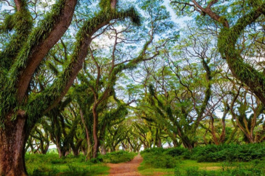
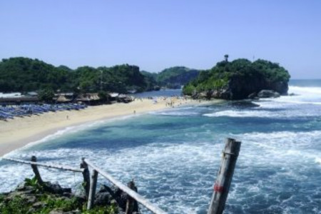
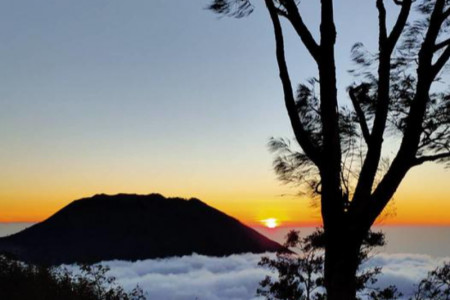
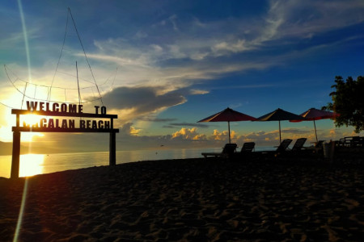
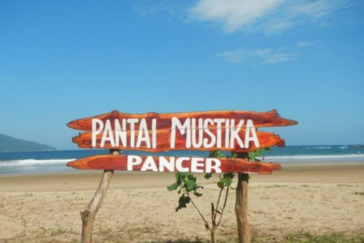
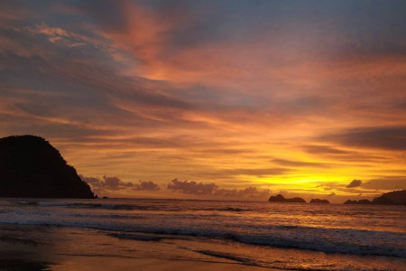
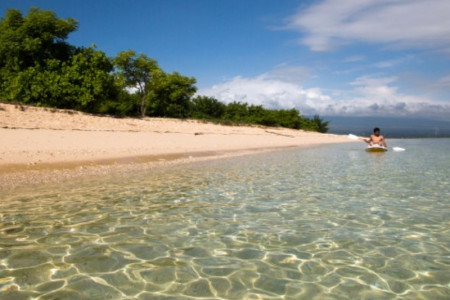

Destination Majestic Banyuwangi
Berikut ini daftar wisata yang sering dikunjungi wisatawan.Bangsring Under Water
Jl. Situbondo - Banyuwangi, Bangsring, Kabupaten Banyuwangi, Jawa Timur

De Djawatan
Purwosari, Benculuk, Cluring, Kabupaten Banyuwangi, Jawa Timur 68482

Pantai Grajagan
Kecamatan Pesanggrahan, Kabupaten Banyuwangi

Gunung Ranti
Dusun Kebundadap, Tamansari, Licin, Kabupaten Banyuwangi, Jawa Timur
Kawah Ijen
Jl. Kawah Ijen, Tamansari, Licin, Kabupaten Banyuwangi, Jawa Timur 68454

Pantai Cacalan
Lingkungan Sukowidi, Klatak, Kec. Kalipuro, Kabupaten Banyuwangi, Jawa Timur 68421

Pantai Mustika
Jl. Raya Pelabuhan Pancer, Dusun Pancer, Pantaimustika, Kabupaten Banyuwangi, Jawa Timur 68488

Pulau Merah
Kecamatan Pesanggaran, Kabupaten Banyuwangi

Pulau Tabuhan
Kemanduran, Bangsring, Kec. Wongsorejo, Kabupaten Banyuwangi, Jawa Timur 68453